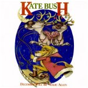
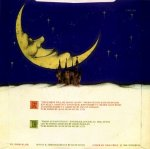

(These lyrics were originally from Andrew Marvick's
The Garden.)
 Misc page
The
Single File page
This
Woman's Work page
Misc page
The
Single File page
This
Woman's Work page
Album/Era
Alphabetical
Gaffaweb
"December Will Be Magic Again"
Written by Kate Bush


- December will be magic again.
- Take a husky to the ice
- While Bing Crosby sings White Christmas. He makes you feel nice.
- December will be magic again.
- Old Saint Nicholas up the chimney,
- Just a-popping up in my memory.
- Ooh, dropping down in my parachute,
- The white city, she is so beautiful
- Upon the black-soot icicled roofs,
- Ooh, and see how I fall.
- See how I fall
-
- ("Fall!") [backwards]
- Like the snow.
- Come to cover the lovers.
-
- (Cover the lovers,
- But don't you wake them up.)
- Come to sparkle the dark up.
-
- (Sparkle the dark up,
- With just a touch of make-up.)
- Come to cover the muck up.
-
- (Cover the muck up,
- Ooh, with a little luck.)
- December will be magic again.
- Light the canDLe-lights
- To conjure Mr. Wilde
- Into the Silent Night.
- Ooh, it's quiet inside,
- Here in Oscar's mind.
- December will be magic again.
- Don't miss the brightest star.
- Kiss under mistletoe.
- I want to hear you laugh.
- Don't let the mystery go now.
- Ooh, dropping down in my parachute,
- The white city, she is so beautiful
- Upon the black-soot icicled roofs,
- Ooh, and see how I fall.
- See how I fall
-
- ("Fall!") [backwards]
- Like the snow.
- Come to cover the lovers.
-
- (Cover the lovers,
- But don't you wake them up.)
- Come to sparkle the dark up.
-
- (Sparkle the dark up,
- With just a touch of make-up.)
- Come to cover the muck up
-
- (Cover the muck up,
- Ooh, with a little luck.)
- Oh, I'm coming to cover the lovers.
- Ooh, and I'm coming to sparkle the dark up.
- Ooh, and I'm coming to cover the muck up.
©1980 Novercia Ltd.
The Single File page
{kind=link}
{kind=link}
{kind=link}